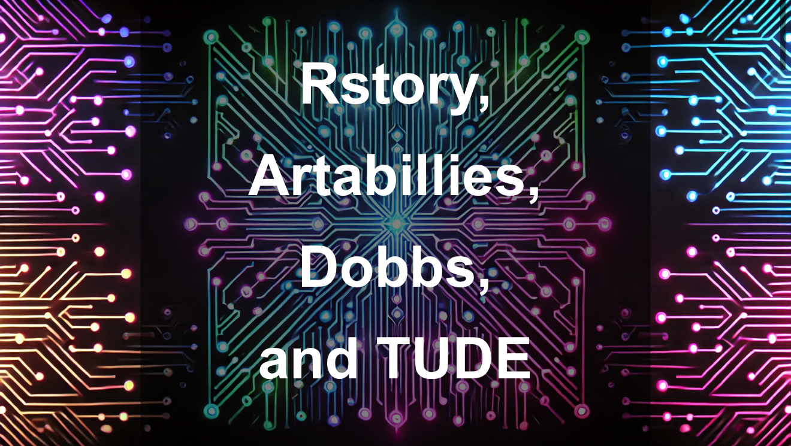

Featured Work

RSTORY + Artabillies Showcase
A beautifully woven portal explaining the origins and vision of RSTORY, seen through the lens of Artabillies. Dive into the mythos, mechanics, and mission behind the token and community.

The Dobbs Gate
A digital gallery installation using both RSTORY and TUDE tokens. This gateway celebrates sacred absurdity, decentralized identity, and glitchy resistance through interactive art.